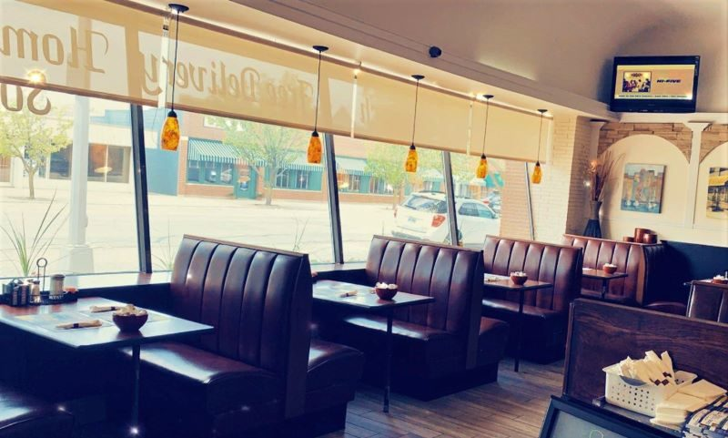
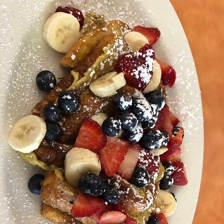

About Maria's
Source: bluewater.org Source: tripadvisor.com
{kind=link}
{kind=link}
4.5 Stars
Serves traditional American food, open 7 days a week. They accept cash or card. Their services include in-store pickup, dine-in, and outdoor seating.
Menu: facebook.com
{kind=link}
Hours:
Monday - Sunday:
7:00 am - 3:00 pm
Reviews
"Great breakfast place. The service was friendly and great. Very clean. Small town vibe, which we love. I had waffles with chocolate chips, eggs, bacon. It is open on Sunday, and there are not many locally owned places open on Sunday morning. It’s within walking distance of the river, if you stay downtown."
- DeeAnna Sova, 4 months ago, 5 stars
"Family friendly, fast service. Booths and tables available in a relaxed environment. Food was hot, delicious and very reasonably priced. Blueberry pancakes and Greek Omelette were fantastic. Would definitely recommend this classic style American diner to others, as well as return myself!
Vegetarian options: Variety of omelettes and non meat dishes available"
- Halusia Witkowski, 10 months ago, 5 stars
Contact
| Website: | facebook.com |
|---|---|
| Address: | 502 Huron Avenue, Port Huron MI 48079, USA |
| Phone: | (810) 966-9200 |
| Email: | Marianuculovic@yahoo.com |